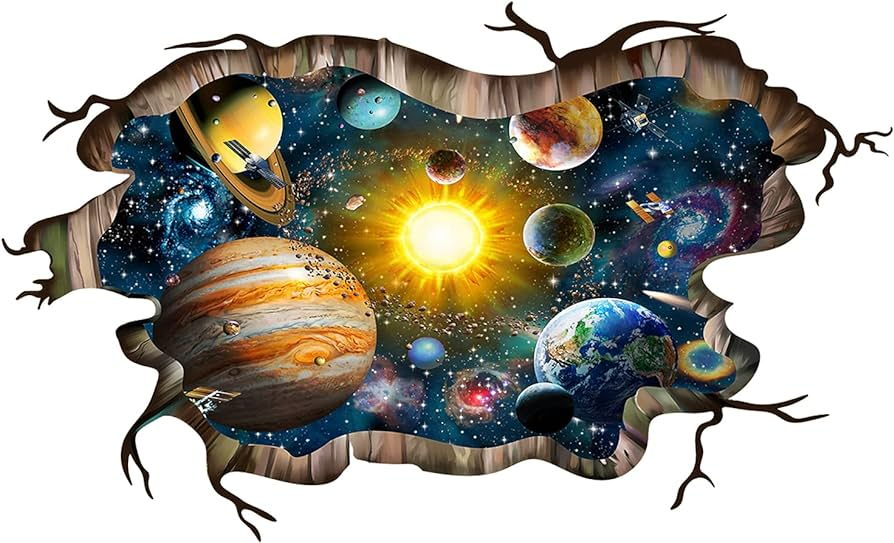

Portada
El Sistema Solar
Objeto Virtual de Aprendizaje(OVA): Sistema Solar, para 6.º Grado de primaria

Objetivo
Ficha Técnica
| Título | Sistema Solar primaria |
| Autor y/o Editor | Docentes: Joel Rosario |Susan Fajardo |Ivelisse Del Rosario |Roldán López | Yenni Ramírez ***(Grupo #4) |
| Dirección web/ repositorio | https://necroliat.github.io/OVA_SIST_SOLAR_6TO_primaria/ |
| Año de publicación | 2023 |
| Materia/Módulo | Ciencias de la Naturaleza |
| Nivel educativo | Nivel Primario - Segundo Ciclo |
| Grado | 6to. Grado |
| Idioma | Español |
| Descripción General | – Análisis y discusión sobre los planetas del Sistema Solar (y otros fuera del Sistema Solar) y sus características. Expresión por medio de dibujos. – Análisis, discusión (comparación, clasificación, descripción) sobre la composición y estructura de la atmósfera del Sol, así como el ciclo de las estrellas. Expresión por medio de dibujos |
| Objetivos | Comunica sus ideas e hipótesis de las observaciones y experimentos, usando y cuidando los sentidos e instrumentos para percibir, recolectar, obtener y organizar datos e información en tablas y graficas elementales; mostrando y argumentado los resultados de su trabajo de forma objetiva, sistemática y creativa en proyecto individual y colectivo de problemáticas de investigación o innovación escolar y comunitaria en salud, nuestro sistema solar y la tierra, fenómenos naturales geológicos y astronómicos, Medioambiente y sostenibilidad. |
| Contenidos | Sistema y mecanismo – El Sistema Solar. – Origen de nuestro Sistema Solar. – La Vía Láctea |
| Tipo de aplicación multimedia | Recurso web, secuencial |
| nivel de control del alumno | Básico, navegación simple e intuitiva. |
| rol del profesor | ser facilitador, ser guía de forma asíncrona. |
| Sistema operativo | Windows, Linux, MacOS, Android, IOS |
| requisitos técnicos | Explorador Web, con compatibilidad con HTLM5 y CSS3 y JavaScript |